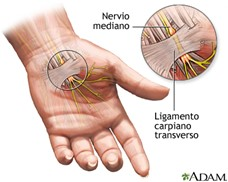
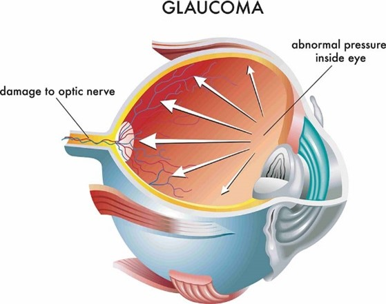

¿LOS TELÉFONOS MÓVILES AFECTAN EL CEREBRO Y EL CUERPO DE LA PERSONA?
Lo utilizamos para el trabajo, la escuela, para elaborar investigaciones, entretenernos, ociar, comunicarnos
con personas que viven dentro y fuera del país, entre otras más; a pesar de ser pequeño puede ejercer
maravillosas cosas y como sus funciones son indispensables en nuestro día día, nos puede facilitar la vida,
adivina adivinadora, ¿Qué será? Pues si tu respuesta fue “el teléfono” o “el celular”, estás en lo cierto.
Los “móviles” son fundamentales, porque nos ayudan en muchos aspectos. Como ya se mencionó tienen diversas
utilidades, pero… ¿Nos hemos puesto a pensar en los daños que en largo plazo nos puede hacer padecer este
aparatito? Parecen tan inocuos, ¿verdad? Sin embargo, nunca juzgues a un libro por su portada o pienses que
todo lo que brilla es oro. A continuación, veremos una serie de consecuencias que puede desencadenar el uso
excesivo de los teléfonos y en general cualquier aparato tecnológico que utilizamos frecuentemente.
1. Adicción:
Los teléfonos nos pueden llevar a una adicción, así es, y que NO seamos capaces de poder controlarlo, esto
conlleva a que la personas posean conductas compulsivas y repetitivas que perjudican su salud mental y física,
además limitan al individuo a que se desarrolle en varias facetas de su vida, ya que este vicio convierte a
sus víctimas en prisioneros, en rehenes.
2. Síndrome del túnel carpiano:

Es una enfermedad que ocurre cuando el nervio mediano de la muñeca recibe una presión excesiva, y este nervio
que permite la sensibilidad y el movimiento a partes de la mano es perjudicada, lo que causa dolor, hormigueo,
debilidad, daño muscular y más. Para poder prevenir este síndrome, lo recomendable es que tome descansos
frecuentes cuando esté tecleando y pare siempre si siente dolor.
3. Problemas de visión:
El uso excesivo de pantallas ya sea el teléfono móvil, la tablet, los ordenadores o incluso la televisión,
provoca que nuestros parpadeos disminuyan por minuto, dando lugar a sequedad ocular, si esto lo hacemos de
manera constante, sin dejar pausas donde podamos relajar nuestros ojos a la exposición de estos elementos
tecnológicos, nos puede conllevar a padecer glaucoma, una enfermedad que se desarrolla cuando el nervio óptico
se daña.
“Cuidemos nuestros ojos que son la ventana del alma”.

4. Problemas neurológicos:
Son quizás los problemas más graves y de difícil tratamiento. Una de las enfermedades que pueden causar es la
epilepsia fotosensible, una forma común de epilepsia causada por estímulos visuales repetidos. Otro problema
neurológico son las migrañas, que pueden ser producidas por mirar fijamente a la pantalla durante un periodo
excesivo de tiempo.
Por otro lado, debemos recalcar que los aparatos tecnológicos afectan también al autocontrol de una persona,
¿Sabías ese dato? Si refrescamos un poco la memoria, te acuerdas la última vez que no pudiste
controlarte,
pues bien, esto se debe a que al estar pegados como chicles a nuestros i pads, celulares, entre otros, causen
un incremento de la irritabilidad del sistema nervioso generándose ansiedad y aumento del estrés. Por ello,
date un tiempo en hacer otras actividades que te generen serotonina, la hormona de la felicidad.
Ten en mente esto: La tecnología es un sirviente útil, pero un
jefe peligroso.
5. Abuso de Auriculares:
En la actualidad, cada vez más personas hacen uso de los audífonos, ya sea para escuchar música, videos,
podcasts y audiolibros mientras realizan ejercicio o trabajan, pero estos pueden también convertirse en
nuestros enemigos. Ya sea si no los limpiamos bien o lo usamos de manera excesiva.
“Deberías bajar el volumen”, “te vas a quedar sordo si sigues escuchando a esa tonalidad”, seguro son frases
que hemos escuchado, cuando tenemos el audífono puesto.

¿Será cierto? ¿Será que de verdad me quedaré sordo?, bueno para aclarar estas dudas, primero enteremos nos lo
que los especialistas señalan: “Un uso extralimitado de auriculares desencadenaría al fin y al cabo
infecciones o problemas auditivos severos” recalca Manuel Mozota, responsable del grupo de trabajo de
otorrinolaringología de la Sociedad Española de Médicos Generales (SEMG).
“Uno de ellos es por el trauma acústico que producen las ondas sonoras al chocar con el tímpano y al
estimular
en exceso al nervio auditivo. Esto depende fundamentalmente de la intensidad y de la duración del estímulo”,
explica el experto. El otro mecanismo al que hace referencia Mozota, es aquel que se debe al roce de los
auriculares, a la falta de transpiración o a la suciedad que se acumula. La mala aireación puede provocar un
exceso de humedad, desembocando en ocasiones en una micosis.
Por otro lado ¿No te ha pasado, que, de un momento a otro, escuchas unos zumbidos, pero por un largo lapso?
Eso se debe también al empleo desmesurado de estos aparatos, ¡Ten mucho cuidado!
Finalmente ¿Cómo lo prevenimos?, pues eso depende de los siguientes factores:
- No utilizarlos más de 1 hora al día
- El uso de estos cuando hay un clima caluroso
- Ponérselos después de una ducha o salir de la piscina
- Usarlos es un alto volumen.
6. Afectan la cognición:
Un estudio publicado en la revista científica “Frontiers in Psychology” en 2017, informa que los hábitos
actuales de uso de teléfonos celulares tienen un impacto negativo y duradero en la capacidad de pensar,
recordar y prestar atención.
Pero ¿Por qué esto se da? Primero debemos entender que los teléfonos permiten que nuestro cerebro no
trabaje
demasiado para obtener información, pongámosle un ejemplo: Cuando vamos a leer un libro, nuestra mente genera
una imagen mental con las descripciones del texto que estamos leyendo, pero si vemos un video, esto no ocurre,
y es ahí cuando el conocimiento que supuestamente estamos absorbiendo no se retiene en nuestra memoria.
Hagamos un experimento, te voy a describir a continuación un animal y el objetivo de hacer esto es que
sepas y
te des cuenta la gran brecha o diferencia que hay entre leer un libro y ver un corto:
- viven en la Antártida. Son pájaros con plumas muy pequeñas y con alas, pero no
puedo volar; sin
embargo, son
magníficos nadadores. Les gusta el frío y comer peces. Cuando están en la tierra son tan lentos como una
tortuga, pero en el agua son más rápidos que muchos peces. La parte delantera la tienen de color blanco, pero
las alas, la cabeza y la espalda son negras, ¿Qué será?, la respuesta es….
“El pingüino”
Como se evidenció haz hecho trabajar a tu cerebro a que pueda imaginar tal animal con aquellas características
y llegaste a la conclusión que era un pingüino, sin embargo si tu hubiera puesto la imagen de aquel ave no
voladora, ya sabrías de lo que te estoy describiendo y no habrías hecho trabajar a tu mente, pues esto sucede
en todos los aspectos, además que leer un libro nos sumerge a un viaje de emociones donde vivimos miles de
vidas, asimismo no solo hacemos pensar y analizar a nuestro encéfalo, sino
hayamos otro camino para dejar de
ser esclavos de un “teléfono”.
Por otro lado, debemos recalcar o dejar en claro lo siguiente antes de pasar al otro apartado: “Los aparatos
tecnológicos inteligentes son una forma de radiación NO ionizante” , eso está claro, pues a
diferencia de los
tipos más potentes de radiación (ionizante), no pueden romper los enlaces químicos en el ADN. Eso solo
ocurriría a niveles "muy elevados". Sin embargo, el tema está siendo revisado. Así es, de hecho, Emilie Van
Deventer dice que la OMS lo está investigando de nuevo. ¿Cómo es eso? Pues, si bien hay falta de evidencia, es
cierto que hay "riesgos potenciales muy peligrosos a largo plazo". Entonces… no solo se podría padecer la
enfermedad del túnel carpiano o problemas neurológicos que han sido mencionados anteriormente, sino también
tumores en la cabeza y en el cuello. Es por eso que algunos especialistas sostienen
que es mejor prevenir que
curar. En ese sentido, se recomienda lo siguiente:
- Hacer otras actividades que nos alejen de este tipo de tecnología, al menos por
un par de horas.
- Limitar el número y duración de las llamadas cuando usemos nuestros teléfonos.
- Usar el celular en zonas de buena recepción, pues esto hace que el celular
trasmita con una potencia de
salida reducida.
Conclusión:
La tecnología ha influido en los cambios estructurales de la sociedad tanto de forma negativa como de forma
positiva, pues tiene ventajas y desventajas para nosotros. Para evitar que todas estas tecnologías que nos
facilitan el día a día se conviertan en algo negativo y perjudicial para la salud, tenemos que hacer un uso
responsable y evitar su empleo de manera excesiva.